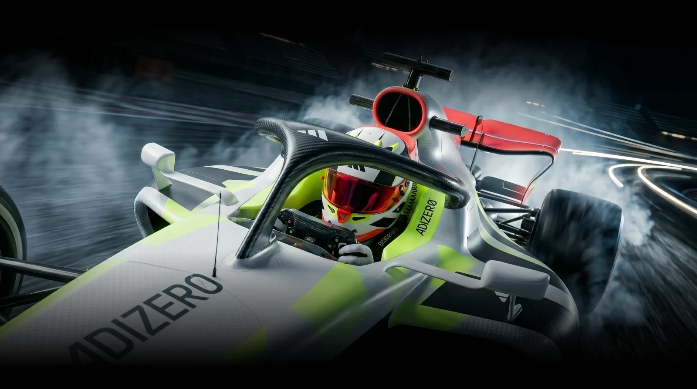
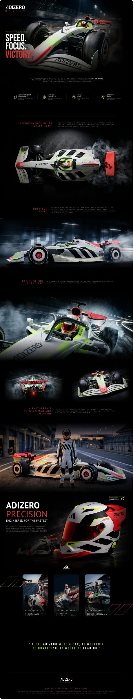

EXPLORAÇÃO CONCEITUAL AUTORAL
A velocidade como
linguagem de design.
E se a leveza ganhasse uma nova pista? Uma exploração visual que aproxima o universo de performance Adizero do automobilismo.

Uma ideia.
Outra dimensão.
O projeto parte de uma aproximação criativa entre dois universos associados à performance. A página transforma essa associação em uma sequência de imagens, títulos e detalhes, construindo uma apresentação de caráter imersivo.
O conceito é apresentado como uma exploração independente de design, sem vínculo comercial ou parceria oficial com a Adidas.
Contraste que
acelera o olhar.
O preto dá profundidade às imagens. Vermelho e verde-lima pontuam a composição. Títulos condensados e textos curtos estabelecem o ritmo entre impacto e informação.

Uma página.
Vários pontos de vista.
Planos abertos apresentam o conceito. Enquadramentos próximos revelam detalhes. A alternância entre essas escalas cria pausas e mantém uma linha visual ao longo da interface.
As observações deste case descrevem a composição do arquivo apresentado. O projeto não inclui, neste material, pesquisa com usuários, testes de usabilidade ou métricas de produto.

Projeto conceitual independente. As marcas citadas pertencem aos seus respectivos titulares.